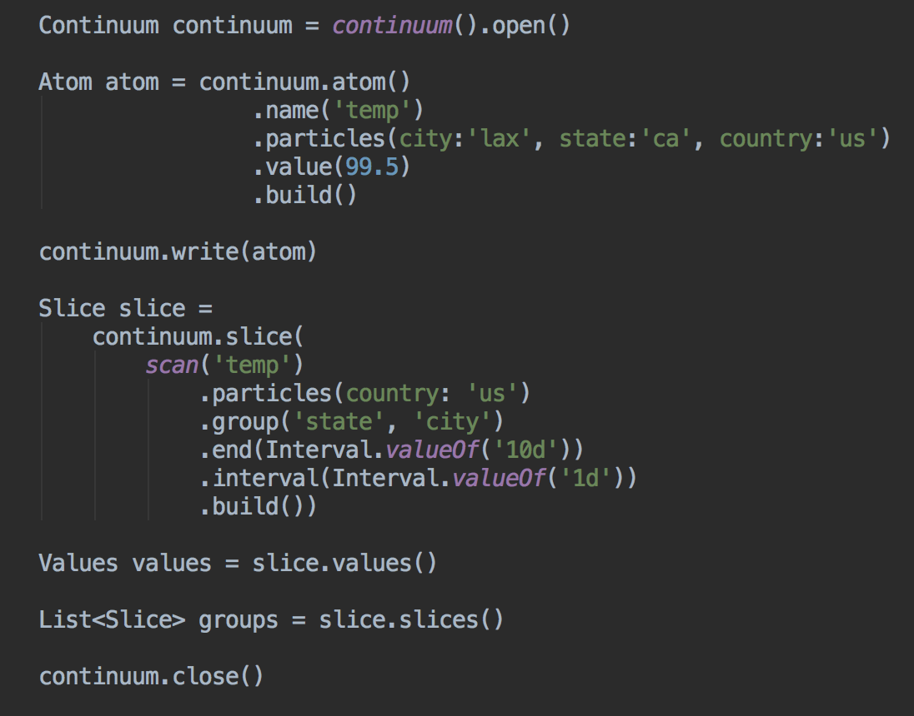

Continuum
A JVM library for storing and analyzing large amounts of time based data
Includes:- Core Library
- REST Interface
- Streaming backup/restore
- Replication
- master/slave
- master/master
Project Goals
- Use memory mapped files and log-structured-merge trees (LSM) to store, retreive, and analyze time-based data
- Leverage existing underlying core technologies like RocksDB, LevelDB, BerkeleyDB and similar datastores
- Employ time-to-live (TTL) or downsampling (RRD) to efficeintly use disk space
- A continuous, scalable infintie time-based data stream by incorporating data windowing, downsampling, or both
- Utilize TWO specialized schema designs for time series data and time key value data
Atom
Time Series
Space/Time: Analysis, Dashboard/UI
- Small number of unique time series with very large data volume (millions to trillions)
- Infinite storage using retention policies and data downsampling (RRDTool, Whisper, InfluxDB inspired)
- Downsampling OK
- Example: "Realtime" performance metrics, measurements of cpu, or weather temperature readings over time
Time Key Value
Time/key:value: User Session and Session Metrics
- Large number of unique keys with smaller amount of data (10s to 1000s)
- For aggregating small amounts of data into buckets by a unique key
- Age out over time
- Stream
- Fast data: hot, open sets of newest data
- Slow data: rolling window of data through ColdStorage (S3, Hadoop, NAS)
- Example: "Realtime" analytics data events grouped by session or user id
API

Scaling
- Add disks
- Cold online backup (backup/restore)
- Hot online backup(s) (read-only replication)
- Application level sharding by key or time
- Cluserting (master-master replication)
Authors
Zack Bartel (@zackb), and Matt Johnson (@mj-dlvr) work on Continuum.
Hacking
We'd love contributions. For now please open an issue or contact me